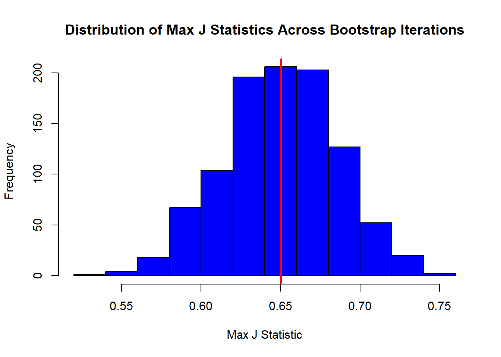
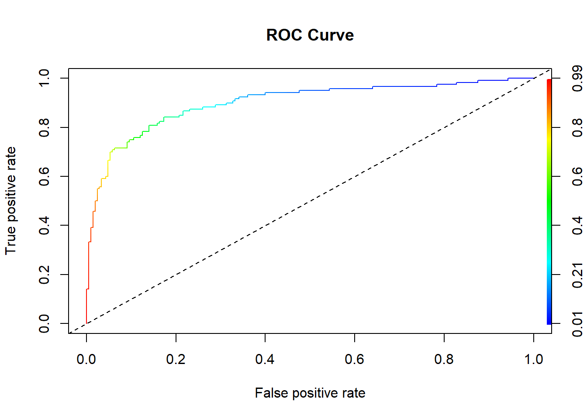

XGB_2
2024-01-28
Intro and purpose
The basic idea of this is to run each rgrid hyperparam a bunch of times with bootstrapped test sets so that we can then just chose which one has the best auc. This is giving practical real results. to save time i do a round that tests the top 10 percent(based on auc) more thoroughly then when we tested each hyperparameter individually.
Set-up
I have ran the set up in this the same as in the other xgboost method
## Rows: 891 Columns: 12
## ── Column specification ────────────────────────────────────────────────────────
## Delimiter: ","
## chr (5): Name, Sex, Ticket, Cabin, Embarked
## dbl (7): PassengerId, Survived, Pclass, Age, SibSp, Parch, Fare
##
## ℹ Use `spec()` to retrieve the full column specification for this data.
## ℹ Specify the column types or set `show_col_types = FALSE` to quiet this message.As a reminder here is the data
## Rows: 891
## Columns: 16
## $ PassengerId <dbl> 1, 2, 3, 4, 5, 6, 7, 8, 9, 10, 11, 12, 13, 14, 15, 16…
## $ Survived <dbl> 0, 1, 1, 1, 0, 0, 0, 0, 1, 1, 1, 1, 0, 0, 0, 1, 0, 1,…
## $ Pclass <fct> 3, 1, 3, 1, 3, 3, 1, 3, 3, 2, 3, 1, 3, 3, 3, 2, 3, 2,…
## $ Sex <fct> male, female, female, female, male, male, male, male,…
## $ Age <dbl> 22.00000, 38.00000, 26.00000, 35.00000, 35.00000, 39.…
## $ SibSp <dbl> 1, 1, 0, 1, 0, 0, 0, 3, 0, 1, 1, 0, 0, 1, 0, 0, 4, 0,…
## $ Parch <dbl> 0, 0, 0, 0, 0, 0, 0, 1, 2, 0, 1, 0, 0, 5, 0, 0, 1, 0,…
## $ Fare <dbl> 7.2500, 71.2833, 7.9250, 53.1000, 8.0500, 8.4583, 51.…
## $ Embarked <fct> S, C, S, S, S, Q, S, S, S, C, S, S, S, S, S, S, Q, S,…
## $ Ticket_Length <int> 9, 8, 16, 6, 6, 6, 5, 6, 6, 6, 7, 6, 9, 6, 6, 6, 6, 6…
## $ Ticket_Is_Number <lgl> FALSE, FALSE, FALSE, TRUE, TRUE, TRUE, TRUE, TRUE, TR…
## $ Title <fct> Mr., Mrs., Miss., Mrs., Mr., Mr., Mr., Master., Mrs.,…
## $ Name_Length <int> 23, 51, 22, 44, 24, 16, 23, 30, 49, 35, 31, 24, 30, 2…
## $ Cabin_Letter <fct> Missing, C, Missing, C, Missing, Missing, E, Missing,…
## $ Has_Cabin <lgl> FALSE, TRUE, FALSE, TRUE, FALSE, FALSE, TRUE, FALSE, …
## $ n <int> 517, 125, 182, 125, 517, 517, 517, 40, 125, 125, 182,…## [1] FALSEI one hot coded it into xs and y. I am not using a sparse matrix
Running The model
Functions
run_xgb <- function(xs, y, grd, v) {
# Setup parallel computing
nc <- detectCores() - 1
cl <- makeCluster(nc)
registerDoParallel(cl)
results <- foreach(g = 1:nrow(grd), .combine='rbind', .packages=c('xgboost', 'ROCR')) %dopar% {
auc <- numeric(v) # AUC scores for validations
for (k in 1:v) {
# Bootstrap sampling for validation
idx <- unique(sample(nrow(xs), nrow(xs), replace = TRUE))
tr_x <- xs[idx, ]
tr_y <- y[idx]
vl_x <- xs[-idx, ]
vl_y <- y[-idx]
# Model training for validation
prms <- list(
booster = "gbtree",
objective = "binary:logistic",
max_depth = grd[g, "max_depth"],
eta = grd[g, "eta"],
subsample = grd[g, "subsample"],
colsample_bytree = grd[g, "colsample_bytree"],
gamma = grd[g, "gamma"],
min_child_weight = grd[g, "min_child_weight"],
alpha = grd[g, "alpha"],
lambda = grd[g, "lambda"]
)
xgb_tr <- xgb.DMatrix(data = tr_x, label = tr_y)
xm <- xgb.train(params = prms, data = xgb_tr, nrounds = grd[g, "nrounds"], verbose = FALSE, nthread = 1)
# AUC calculation for validation
phat <- predict(xm, xgb.DMatrix(data = vl_x))
pred <- prediction(phat, vl_y)
auc[k] <- performance(pred, "auc")@y.values[[1]]
}
# AUC mean and params
auc_mean <- mean(auc)
c(grd[g, ], auc_mean)
}
# Stop the cluster
stopCluster(cl)
# Convert results to a tibble and set column names
res <- as_tibble(results)
names(res) <- c(names(grd), "AUC_Mean")
res <- res %>%
mutate(across(everything(), ~unlist(.)))
return(res)
}test_top_hp <- function(hp, xs, y, t) {
# Setup parallel computing
nc <- detectCores() - 1
cl <- makeCluster(nc)
registerDoParallel(cl)
# Testing loop
ts_res <- foreach(h = 1:nrow(hp), .combine = 'rbind', .packages = c('xgboost', 'ROCR')) %dopar% {
aucs <- numeric(t)
for (i in 1:t) {
# Bootstrap sampling for testing
idx <- unique(sample(nrow(xs), nrow(xs), replace = TRUE))
mdx <- xs[idx, ]
mdy <- y[idx]
tx <- xs[-idx, ]
ty <- y[-idx]
# Parameters for the model
prms <- list(
booster = "gbtree",
objective = "binary:logistic",
max_depth = hp[h, "max_depth"],
eta = hp[h, "eta"],
subsample = hp[h, "subsample"],
colsample_bytree = hp[h, "colsample_bytree"],
gamma = hp[h, "gamma"],
min_child_weight = hp[h, "min_child_weight"],
alpha = hp[h, "alpha"],
lambda = hp[h, "lambda"],
nrounds = hp[h, "nrounds"]
)
# Train and test the model
dtr <- xgb.DMatrix(data = mdx, label = mdy)
dte <- xgb.DMatrix(data = tx, label = ty)
mdl <- xgb.train(params = prms, data = dtr, nrounds = prms$nrounds, verbose = 0, nthread = 1)
# AUC calculation
ph <- predict(mdl, dte)
pr <- prediction(ph, ty)
aucs[i] <- performance(pr, "auc")@y.values[[1]]
}
# Average AUC and combine with hyperparameters
c(hp[h, ], mean_auc = mean(aucs))
}
# Stop the cluster
stopCluster(cl)
# Convert to tibble and unlist columns
ts_tbl <- as_tibble(ts_res) %>% mutate(across(everything(), ~unlist(.)))
return(ts_tbl)
}test_auc <- function(xs, y, best_hp, runs) {
aucs <- numeric(runs)
for (i in 1:runs) {
# Bootstrap sampling for testing
idx <- unique(sample(nrow(xs), nrow(xs), replace = TRUE))
md_x <- xs[idx, ]
md_y <- y[idx]
test_x <- xs[-idx, ]
test_y <- y[-idx]
# Set parameters for the model
params <- list(
booster = "gbtree",
objective = "binary:logistic",
max_depth = best_hp$max_depth,
eta = best_hp$eta,
subsample = best_hp$subsample,
colsample_bytree = best_hp$colsample_bytree,
gamma = best_hp$gamma,
min_child_weight = best_hp$min_child_weight,
alpha = best_hp$alpha,
lambda = best_hp$lambda
)
# Train and test the model
md <- xgb.DMatrix(data = md_x, label = md_y)
dtest <- xgb.DMatrix(data = test_x, label = test_y)
model <- xgb.train(params = params, data = md, nrounds = best_hp$nrounds, verbose = 0, nthread = 1)
# Calculate AUC
phat <- predict(model, dtest)
pred <- prediction(phat, test_y)
aucs[i] <- performance(pred, "auc")@y.values[[1]]
}
return(aucs)
}Model Running
Now lets actually run our algorithm
Validating
grid <- expand.grid(
eta = seq(0.07, 0.10, by = 0.01),
max_depth = seq(1, 10, by = 9),
min_child_weight = seq(1, 19, by = 4),
subsample = seq(0.6, 0.8, by = 0.1),
colsample_bytree = seq(0.8, 1, by = 0.1),
lambda = seq(0, 12, by = 4),
alpha = seq(0, 4, by = 2),
gamma = seq(0, 2, by = 2),
nrounds = c(150, 200, 300)
)conf_lev <- .95
num_max <- 5 # Define number around the maximum
n <- log(1-conf_lev)/log(1-num_max/nrow(grid))
ind <- sample(nrow(grid), nrow(grid)*(n/nrow(grid)), replace = FALSE)
rgrid <- grid[ind, ]v <- 200
# Call the modified run_xgb function
vr <- run_xgb(xs, y, rgrid, v)
print(head(vr), width = Inf)## # A tibble: 6 × 10
## eta max_depth min_child_weight subsample colsample_bytree lambda alpha gamma
## <dbl> <dbl> <dbl> <dbl> <dbl> <dbl> <dbl> <dbl>
## 1 0.07 10 5 0.6 1 8 2 0
## 2 0.1 10 13 0.7 1 4 4 2
## 3 0.08 10 5 0.7 1 12 2 0
## 4 0.08 1 5 0.7 0.8 8 2 2
## 5 0.08 10 17 0.7 1 0 2 0
## 6 0.09 10 13 0.8 0.9 4 0 0
## nrounds AUC_Mean
## <dbl> <dbl>
## 1 200 0.877
## 2 200 0.862
## 3 150 0.877
## 4 150 0.861
## 5 300 0.866
## 6 200 0.875Testing
# Sort vr by AUC_Mean and select the top 25%
top_hp <- vr %>%
arrange(desc(AUC_Mean)) %>%
slice_head(prop = 0.1)t <- 1500
# Call test_top_hp with top hyperparameters, features (xs), targets (y), and number of tests (t)
ts_res <- test_top_hp(top_hp, xs, y, t)
print(head(ts_res), width = Inf)## # A tibble: 6 × 11
## eta max_depth min_child_weight subsample colsample_bytree lambda alpha gamma
## <dbl> <dbl> <dbl> <dbl> <dbl> <dbl> <dbl> <dbl>
## 1 0.09 10 1 0.7 1 12 0 0
## 2 0.07 10 1 0.8 1 4 2 0
## 3 0.08 10 1 0.8 0.8 12 0 0
## 4 0.07 10 1 0.8 1 12 0 0
## 5 0.09 10 1 0.8 0.9 4 2 0
## 6 0.07 10 1 0.7 0.8 8 2 0
## nrounds AUC_Mean mean_auc
## <dbl> <dbl> <dbl>
## 1 150 0.888 0.884
## 2 300 0.887 0.883
## 3 200 0.886 0.884
## 4 150 0.886 0.884
## 5 150 0.886 0.884
## 6 200 0.886 0.883Final AUC pres
best_hp <- ts_res %>%
dplyr::arrange(desc(mean_auc)) %>%
dplyr::slice(1)
print(best_hp, width = Inf)## # A tibble: 1 × 11
## eta max_depth min_child_weight subsample colsample_bytree lambda alpha gamma
## <dbl> <dbl> <dbl> <dbl> <dbl> <dbl> <dbl> <dbl>
## 1 0.09 10 1 0.7 0.9 12 0 0
## nrounds AUC_Mean mean_auc
## <dbl> <dbl> <dbl>
## 1 150 0.884 0.886## [1] 0.8836899## [1] 0.01684275As we can see our results are much better even with a small grid
plot(auc, col="red")
abline(a = mean(auc), b = 0, col = "blue", lwd = 2)
abline(a = mean(auc)-1.96*sd(auc), b = 0, col = "green", lwd = 3)
abline(a = mean(auc)+1.96*sd(auc), b = 0, col = "green", lwd = 3)
Tune for best threshold
We are going to use jstat but you can pick another confusion table metric if you want
r <- 1000
best_thresholds <- numeric(r)
j_stats <- numeric(r)
for(i in 1:r) {
# Bootstrap sampling
ind <- sample(nrow(xs), size = nrow(xs), replace = TRUE)
train_xs <- xs[ind, ]
test_xs <- xs[-ind, ]
train_y <- y[ind]
test_y <- y[-ind]
# Create DMatrix objects
dtrain <- xgb.DMatrix(data = train_xs, label = train_y)
dtest <- xgb.DMatrix(data = test_xs, label = test_y)
# Extract parameters for the model from best_hp
params <- list(
booster = "gbtree",
objective = "binary:logistic",
eta = best_hp$eta,
max_depth = best_hp$max_depth,
subsample = best_hp$subsample,
colsample_bytree = best_hp$colsample_bytree,
min_child_weight = best_hp$min_child_weight,
gamma = best_hp$gamma,
alpha = best_hp$alpha,
lambda = best_hp$lambda
)
# Train the model
xgbmdl <- xgb.train(params = params, data = dtrain, nrounds = best_hp$nrounds, verbose = 0)
# Predictions
phat <- predict(xgbmdl, dtest)
# ROCR predictions object
pred <- prediction(phat, test_y)
# Calculate performance measures
perf <- performance(pred, measure = "sens", x.measure = "spec")
sensitivity <- slot(perf, "y.values")[[1]]
specificity <- slot(perf, "x.values")[[1]]
thresholds <- slot(perf, "alpha.values")[[1]]
j_stat <- sensitivity + specificity - 1
# Find the best threshold (maximizing J statistic)
best_idx <- which.max(j_stat)
best_thresholds[i] <- thresholds[best_idx]
j_stats[i] <- j_stat[best_idx]
}
# Calculate and print the average of the best thresholds
avg_best_threshold <- mean(best_thresholds)
cat("Average Best Threshold:", avg_best_threshold, "\n")## Average Best Threshold: 0.402199# Plot the distribution of max J statistics for each iteration
hist(j_stats, col = "blue", xlab = "Max J Statistic", ylab = "Frequency",
main = "Distribution of Max J Statistics Across Bootstrap Iterations")
abline(v = mean(j_stats), col = "red", lwd = 2) # Mean J Stat line
Confusion table and ROC
For now this is one run and unreliable but we can loop it and do confidence intervals swap this confusion table around
ind <- sample(nrow(xs), size = nrow(xs), replace = TRUE)
train_xs <- xs[ind, ]
test_xs <- xs[-ind, ]
train_y <- y[ind]
test_y <- y[-ind]
dtrain <- xgb.DMatrix(data = train_xs, label = train_y)
dtest <- xgb.DMatrix(data = test_xs, label = test_y)
xgbmdl_final <- xgb.train(params = params, data = dtrain, nrounds = best_hp$nrounds, verbose = 0)
final_phat <- predict(xgbmdl_final, dtest)
final_predicted_classes <- ifelse(final_phat > avg_best_threshold, 1, 0)
final_test_y_binary <- ifelse(test_y > avg_best_threshold, 1, 0) # Adjusting to binary if not already
conf_matrix <- table(Predicted = final_predicted_classes, Actual = final_test_y_binary)
print(conf_matrix)## Actual
## Predicted 0 1
## 0 174 21
## 1 34 99final_pred_rocr <- prediction(final_phat, test_y)
final_perf_rocr <- performance(final_pred_rocr, "tpr", "fpr")
plot(final_perf_rocr, colorize = TRUE, main = "ROC Curve")
abline(a = 0, b = 1, lty = 2) # Reference line Avg confusion table. we should do a CI later
# Initialize storage for aggregated confusion matrix totals
conf_mat_totals <- matrix(0, nrow = 2, ncol = 2)
colnames(conf_mat_totals) <- c("Predicted_1", "Predicted_0")
rownames(conf_mat_totals) <- c("Actual_1", "Actual_0")
# Initialize lists to store TPR and FPR values for each bootstrap iteration
all_tpr <- list()
all_fpr <- list()
for(i in 1:1000) {
ind <- sample(nrow(xs), size = nrow(xs), replace = TRUE)
train_xs <- xs[ind, ]
test_xs <- xs[-ind, ]
train_y <- y[ind]
test_y <- y[-ind]
dtrain <- xgb.DMatrix(data = train_xs, label = train_y)
dtest <- xgb.DMatrix(data = test_xs, label = test_y)
xgbmdl_final <- xgb.train(params = params, data = dtrain, nrounds = best_hp$nrounds, verbose = 0)
final_phat <- predict(xgbmdl_final, dtest)
final_predicted_classes <- ifelse(final_phat > avg_best_threshold, 1, 0)
final_test_y_binary <- ifelse(test_y > avg_best_threshold, 1, 0)
conf_matrix <- table(Predicted = factor(final_predicted_classes, levels = c(1, 0)), Actual = factor(final_test_y_binary, levels = c(1, 0)))
conf_mat_totals <- conf_mat_totals + as.matrix(conf_matrix)
final_pred_rocr <- prediction(final_phat, test_y)
final_perf_rocr <- performance(final_pred_rocr, "tpr", "fpr")
# Store TPR and FPR values for this iteration
all_tpr[[i]] <- final_perf_rocr@y.values[[1]]
all_fpr[[i]] <- final_perf_rocr@x.values[[1]]
}
# Calculate the average confusion matrix
avg_conf_matrix <- conf_mat_totals / 1000
print(avg_conf_matrix)## Predicted_1 Predicted_0
## Actual_1 97.456 29.009
## Actual_0 28.354 173.010This doesnt have a CI but its a average
# Determine common FPR thresholds for interpolation (simplified approach)
common_fpr_thresholds <- seq(0, 1, length.out = 100)
# Initialize vectors to hold averaged TPR values for these common thresholds
averaged_tpr <- numeric(length(common_fpr_thresholds))
# Interpolate TPR values at common FPR thresholds for each bootstrap iteration and average them
for (i in seq_along(common_fpr_thresholds)) {
tpr_values_at_threshold <- sapply(seq_along(all_tpr), function(j) {
approx(all_fpr[[j]], all_tpr[[j]], xout = common_fpr_thresholds[i])$y
})
averaged_tpr[i] <- mean(tpr_values_at_threshold, na.rm = TRUE)
}
# Plot the averaged ROC curve
plot(common_fpr_thresholds, averaged_tpr, type = 'l', col = 'blue', xlab = 'False Positive Rate', ylab = 'True Positive Rate', main = 'Averaged ROC Curve across Bootstrap Samples')
abline(a = 0, b = 1, lty = 2, col = 'red') # Reference line